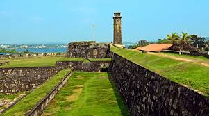

Situated on the southwest coast, about 120 km from Colombo, Galle Fort lies within the modern city of Galle. It is a UNESCO World Heritage Site and the largest remaining fortress in Asia built by Europeans.
Originally constructed by the Portuguese in 1588, Galle Fort was later fortified by the Dutch in the 17th century after they captured the city. It became an important trading hub, linking Europe and Asia. The British added further structures in the 19th century. Today, it is not just a relic but a vibrant town, where heritage buildings blend with modern culture.
Ramparts & Bastions: Overlooking the Indian Ocean, perfect for sunset walks.
Dutch Reformed Church & Anglican Church: Colonial-era places of worship.
Maritime Museum & Old Dutch Hospital: Now filled with shops and cafes.
Clock Tower & Lighthouse: Iconic symbols of the fort.
Boutique Streets: Antique shops, art galleries, jewelry stores, and cafes.
Walk the entire perimeter of the fort (2–3 hours).
Try local seafood in a fort-side café.
Shop for gems, handicrafts, and batik fabrics.
Explore nearby Unawatuna Beach or Hikkaduwa for snorkeling.
Best Season: December–April (calm seas and sunny weather).
Entry: Free (public area).
Stay inside the fort in a colonial villa for the full experience.
The fort can be explored in a day, but staying overnight offers a unique vibe.
